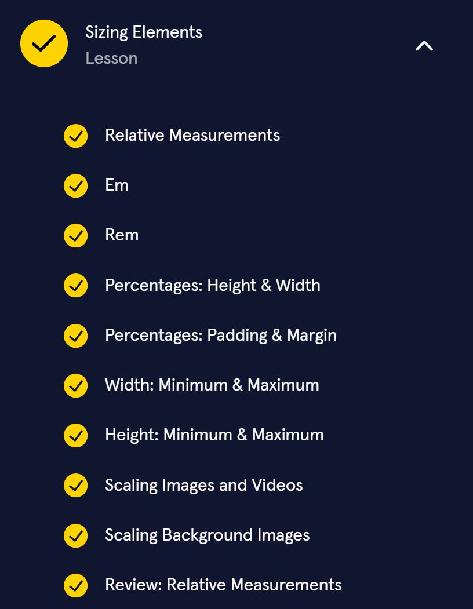
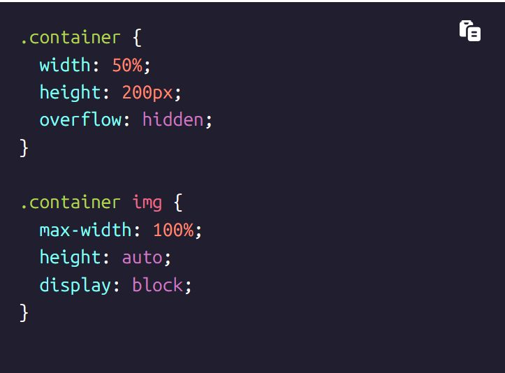
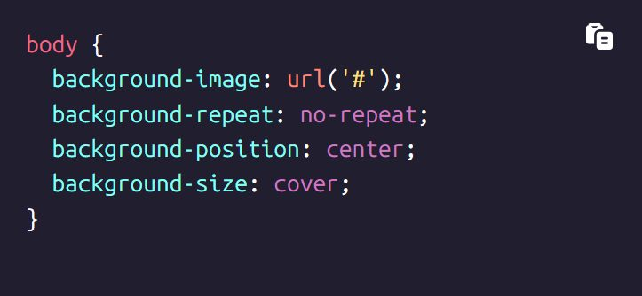
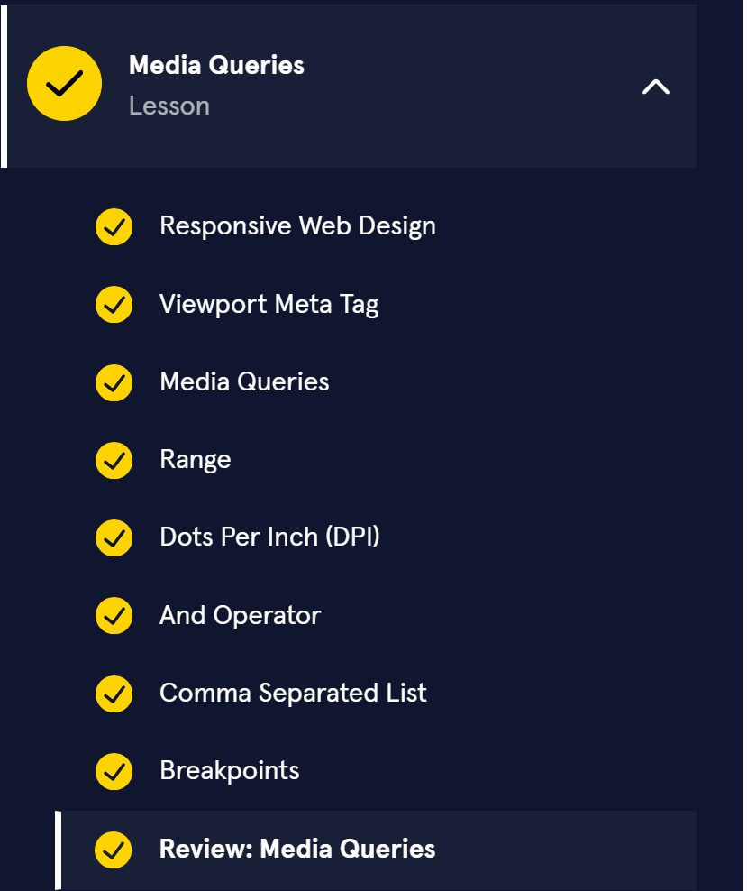
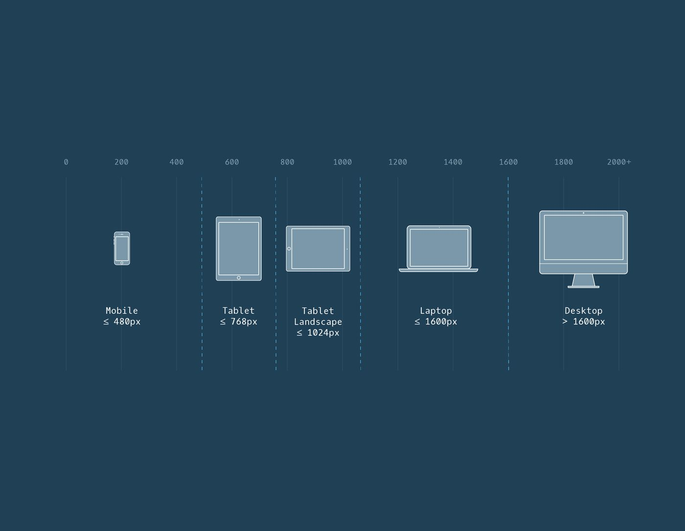

Codecademy Record 03
Intermediate CSS
Notes
As previously stated, flex containers have two axes: a main axis and a cross axis. By default, the main axis is horizontal and the cross axis is vertical.
The main axis is used to position flex items with the following properties:
- justify-content
- flex-wrap
- flex-grow
- flex-shrink
The cross axis is used to position flex items with the following properties:
- align-items
- align-content
Chapter 1: Flexbox
You should be proud of yourself! You have learned the most important properties of flexbox. Flexbox is an art and a science; you can use it to make laying out multiple elements a piece of cake. You know everything necessary to begin using it in your own projects.
• display: flex changes an element to a block-level container with flex items inside of it.
• display: inline-flex allows multiple flex containers to appear inline with each other.
• justify-content is used to space items along the main axis.
• align-items is used to space items along the cross axis.
• flex-grow is used to specify how much space (and in what proportions) flex items absorb along the main axis.
• flex-shrink is used to specify how much flex items shrink and in what proportions along the main axis.
• flex-basis is used to specify the initial size of an element styled with flex-grow and/or flex-shrink.
• flex is used to specify flex-grow, flex-shrink, and flex-basis in one declaration.
• flex-wrap specifies that elements should shift along the cross axis if the flex container is not large enough.
• align-content is used to space rows along the cross axis.
• flex-direction is used to specify the main and cross axes.
• flex-flow is used to specify flex-wrap and flex-direction in one declaration.
• Flex containers can be nested inside of each other by declaring display: flex or display: inline-flex for children of flex containers.
Let’s apply a few of the properties you’ve learned to arrange one section of the web page in the browser to the right!
Chapter 2: Grid
At this point, we’ve covered a great deal of different ways to manipulate the grid and the items inside it to create interesting layouts.
• grid-template-columns defines the number and sizes of the columns of the grid.
• grid-template-rows defines the number and sizes of the rows of the grid.
• grid-template is a shorthand for defining both grid-template-columns and grid-template-rows in one line.
• row-gap puts blank space between the rows of the grid.
• column-gap puts blank space between the columns of the grid.
• gap is a shorthand for defining both row-gap and column-gap in one line.
• grid-row-start and grid-row-end make elements span certain rows of the grid.
• grid-column-start and grid-column-end make elements span certain columns of the grid.
• grid-area is a shorthand for grid-row-start, grid-column-start, grid-row-end, and grid-column-end, all in one line.
You have seen how to set up and fill in a grid and you now have one more CSS positioning technique to add to your toolkit! Let’s do some practice to solidify these skills.
Chapter 3: Advanced Grid
Great work! You have learned many new properties to use when creating a layout using CSS Grid! Let’s review:
• grid-template-areas specifies grid named grid areas.
• Grid layouts are two-dimensional: they have a row, or inline, axis and a column, or block, axis.
• justify-items specifies how individual elements should spread across the row axis.
• justify-content specifies how groups of elements should spread across the row axis.
• justify-self specifies how a single element should position itself with respect to the row axis.
• align-items specifies how individual elements should spread across the column axis.
• align-content specifies how groups of elements should spread across the column axis.
• align-self specifies how a single element should position itself with respect to the column axis.
• grid-auto-rows specifies the height of rows added implicitly to the grid.
• grid-auto-columns specifies the width of columns added implicitly to the grid.
• grid-auto-flow specifies in which direction implicit elements should be created.
This is a great time to experiment with the code in the code editor and try any of the properties you want to practice more! When you’re ready, move on!
Chapter 4: Transitions
CSS Transitions are a powerful tool for providing visual feedback to users. We’ve learned a lot about transitions, so let’s review:
CSS Transitions have 4 components:
• A property that will transition.
• The duration which describes how long the transition takes.
• The delay to pause before the transition will take place.
• The timing function that describes the transition’s acceleration.
A simple transition can be described with a property and a duration, which can be written like this:
transition-property: color;
transition-duration: 1s;
Many properties’ state changes can be transitioned, including color, background color, font size, width, and height. all is also a valid transition property that causes every changing property to transition.
The shorthand property transition can be used to describe all four components of a transition at once. By using the comma (,) operator, many transitions can be described in one CSS rule.
<transition: property duration timing-function delay >
If you want to learn more about CSS Transitions, we recommend MDN’s Using CSS Transitions doc.
Good work, you now have the tools to make your web pages come to life!
Chapter 5
（Responsive Design: Sizing Elements）

Great work! You learned how to size elements on a website relative to other elements on the page.
Let’s review what you learned:

- Content on a website can be sized relative to other elements on the page using relative measurements.
- The unit of em sizes font relative to the font size of a parent element.
- The unit of rem sizes font relative to the font size of a root element. That root element is the <html> element.
- Percentages are commonly used to size box-model features, like the width, height, padding, or margin of an element.
- When percentages are used to size width and height, child elements will be sized relative to the dimensions of their parent (remember that parent dimensions must first be set).
- Percentages can be used to set padding and margin. Horizontal and vertical padding and margin are set relative to the width of a parent element.
- The minimum and maximum width of elements can be set using min-width and max-width.
- The minimum and maximum height of elements can be set using min-height and max-height.
- When the height of an image or video is set, then its width can be set to auto so that the media scales proportionally. Reversing these two properties and values will also achieve the same result.
- A background image of an HTML element will scale proportionally when its background-size property is set to cover.

Relative units of measurement are a first step towards incorporating responsive design in a website. When combined with more advanced responsive techniques, you can create a seamless user experience regardless of a device’s screen size.
Chapter 6: Media queries

Incredible work! You learned how to change the way a website appears on different screens with media queries and breakpoints
Throughout this lesson, you learned:
- When a website responds to the size of the screen it’s viewed on, it’s called a responsive website.
- You can write media queries to help with different screen sizes.
- Adding the viewport <meta> tag to our code allows us to control the width and scaling of the viewport so that it’s sized and scaled correctly on all devices.
- Media queries require media features. Media features are the conditions that must be met to render the CSS within a media query.
- Media features can detect many aspects of a user’s browser, including the screen’s width, height, resolution, orientation, and more.
- The and operator requires multiple media features to be true at once.
- A comma separated list of media features only requires one media feature to be true for the code within to be applied.
- The best practice for identifying where media queries should be set is by resizing the browser to determine where the content naturally breaks. Natural breakpoints are found by resizing the browser.
With your knowledge of media queries and CSS, you can make websites that look great on any device, from a small phone to a huge television. By making your websites responsive, you’ll make it possible for any of your users to have a great experience.

———————————————————————————
Chapter 7: Variables
In this lesson, we learned how to use CSS variables to make property values more legible and easily replaced. We also learned about the power of scoping, overriding variables, and fallback values. Finally, we practiced using variables with media queries to create a website with dynamic web themes.
• Variables mitigate the need to repeat property values and make CSS code easier to read.
• You can use variables in CSS to store values.
• Variable declaration must start with a double hyphen (--).
• Variables must be used as values for CSS properties.
• Variables must be used as an argument inside of the var() function.
• Variables are subject to both scope and inheritance.
• Globally scoped variables are defined inside the :root pseudo-class.
• Overriding a variable is done by redefining that variable’s value inside of the desired selector ruleset.
• Fallback values can be used to provide a backup value if the initial variable is invalid.
• Multiple fallback values can be provided by adding more values inside cascading var() functions.
• Responsively designed web pages can be created by combining variables with media queries.
Chapter 8: Functions
In this lesson, we learned about how CSS functions can be used to set background images, perform mathematical calculations, and dynamically set values between minimum and maximum ranges. We also learned about property-specific functions used to set colors, create filters, and transform elements!
Let’s review some of the main points covered in this lesson:
• Functions are a type of CSS value that is inserted in place of a hardcoded value on a CSS property.
• The url() function is used to load resources into the stylesheet.
• You can use the calc() function to perform simple mathematical operations on elements.
• The min() function can be used to select the smallest value from a range of values and set that value on a property.
• The max() function can be used to select the largest value from a range of values and set that value on a property.
• You can use the clamp() function to ensure property value scales up and down while staying between an upper and lower bound.
• Color values that are fully opaque can be set using the rgb() and hsl() functions.
• Color values that need a varying level of alpha can be set using the rgba() and hsla() functions.
• You can use filter functions to change the appearance of input images and elements.
• The drop-shadow(), blur(), and brightness() functions each perform different kinds of element filtering.
• You can use transformation functions to manipulate image positioning, scale, rotation, and more.
• The scale(), rotate(), and translate() functions each allow for specific kinds of transformation.